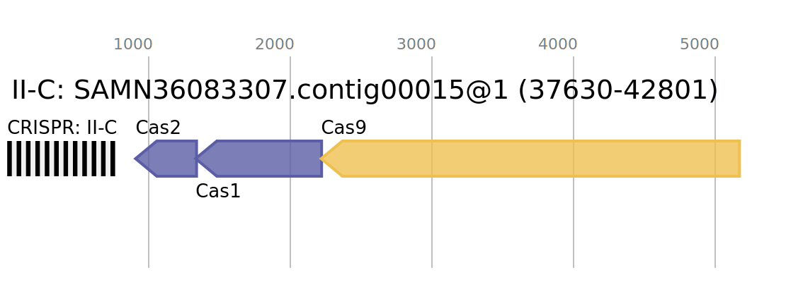

Step-by-step explanation of the CRISPR-Cas screening workflow (simplified)
flowchart LR
A([Genome]) -->|Screen CRISPR-Cas| B[Tables]
A([Genome]) -->|Screen CRISPR-Cas| F(FASTA)
B -->|Parse| C[CSV file]
B -->|Concatenate| D[Table / batch]
F(FASTA) -->|Concatenate| G(Spacers / batch)
C[CSV file] -->|Concatenate| H[CSV / batch]
H[CSV / batch] -->|"Combine
batches"| I[("CRISPR-Cas
database")]1. Screening genomes for presence of CRISPR-Cas
We screen each input genome for the presence of CRISPR-Cas loci using CCTyper. For a detailed overview of the method, please see the paper (preprint). CCTyper produces tab-separated output tables summarising results of:
- Complete CRISPR-Cas systems (CRISPR + Cas locus)
- Orphan CRISPR arrays (CRISPR spacers and repeats, without cas genes)
- Cas operons (Any putative operon of cas genes, with or without CRISPR array)
It also saves the CRISPR spacer sequences as .fa file:
each array gets one FASTA file with spacers as separate entries/lines.
This is described in the Snakefile rule crisprcastyper.
The output files have the extension .tab.
CCTyper also provides a visual output for each identified locus, for example:

1.1 Summarising the summaries
To facilitate further processing of the results reported by CCTyper,
we combine the most relevant results from the different .tab files
into one .csv file: CRISPR-Cas.csv. At the same time, the array/
operon names, start and stop positions and DNA sequence orientation
are collected and saved as .bed files.
This corresponds to rule parse_cctyper.
We do this using a custom script: bin/cctyper_expender.py.
1.2 Practical detail on processing ten thousands of genomes
Since we are working with large numbers of genome files, these have
been separated in batches, each with up to 4,000 genomes. For each batch,
we concatenate the tabular files mentioned above. This is described in
Snakefile rule collect_cctyper.
This step concatenates the results from all .tab files in a batch,
the .csv file generated in step 1.1,
and the .fa files containing all separate CRISPR spacer sequences
as generated by CCTyper.
This step uses two custom bash scripts to concatenate tables in a way
that only one header line is used in the concatenated file:
bin/concatenate_cctyper_output.sh and
bin/concatenate_cctyper_csv.sh.
To concatenate the spacer fasta files, we simply use cat.
Note that CCTyper reports putative cas operons.
The concatenate_cctyper_output.sh script also makes a .tab file of
predicted 'true' operons as cas_operons-[batch name].tab.
On a technical note, rather than using Snakemake's built-in parallelisation, we rely on GNU parallel to process genomes in batches. The code is:
find -L {input.batch} -mindepth 1 -maxdepth 1 -type f -name "*.fa" -print0 |\
parallel -0 --jobs {threads} --retry-failed --halt='now,fail=1'\
'rm -rf "{params.out_dir}{{/.}}" &&\
cctyper -t 1 {{}} "{params.out_dir}{{/.}}"' > {log} 2>&1
touch {output}
find is used to localise the input files with extension '.fa'.
(-type f matches files only, while the -L option enables the use of
symbolic links.)
These files are then passed to parallel, which executes the codeblock
from rm -rf to cctyper. To prevent funny results with previous analyses,
we remove any previous output directories and then run CCTyper with default
parameters and 1 CPU thread to analyse the given input genome.
All the command-line output (stdout and stderr) is written to the log file
specified in the Snakefile.
For more details on using GNU parallel, see the development notes.
1.3 Collect all identified CRISPR spacers
After the concatenation of CCTyper's output files per batch, CRISPR
spacer sequences (as .fa files) for all batches are concatenated
in one batch with the rule concatenate_all_spacers.
This results in a single file all_spacers.fasta for all input genomes together.
Output files generated in the process 
Each step in the process generates a number of output files, which by default are written to:
data/
tmp/
cctyper/ # Here go overall files, such as 'all_spacers.fa'
batch_[number]/ # Here we get batch-wide files, such as
# 'CRISPR-Cas-batch_[number].csv'.
[sample_id]/ # Here go the sample-specific files, such as CCTyper's
# primary output, for example 'crisprs_all.tab'
For more details on the output files, see output.